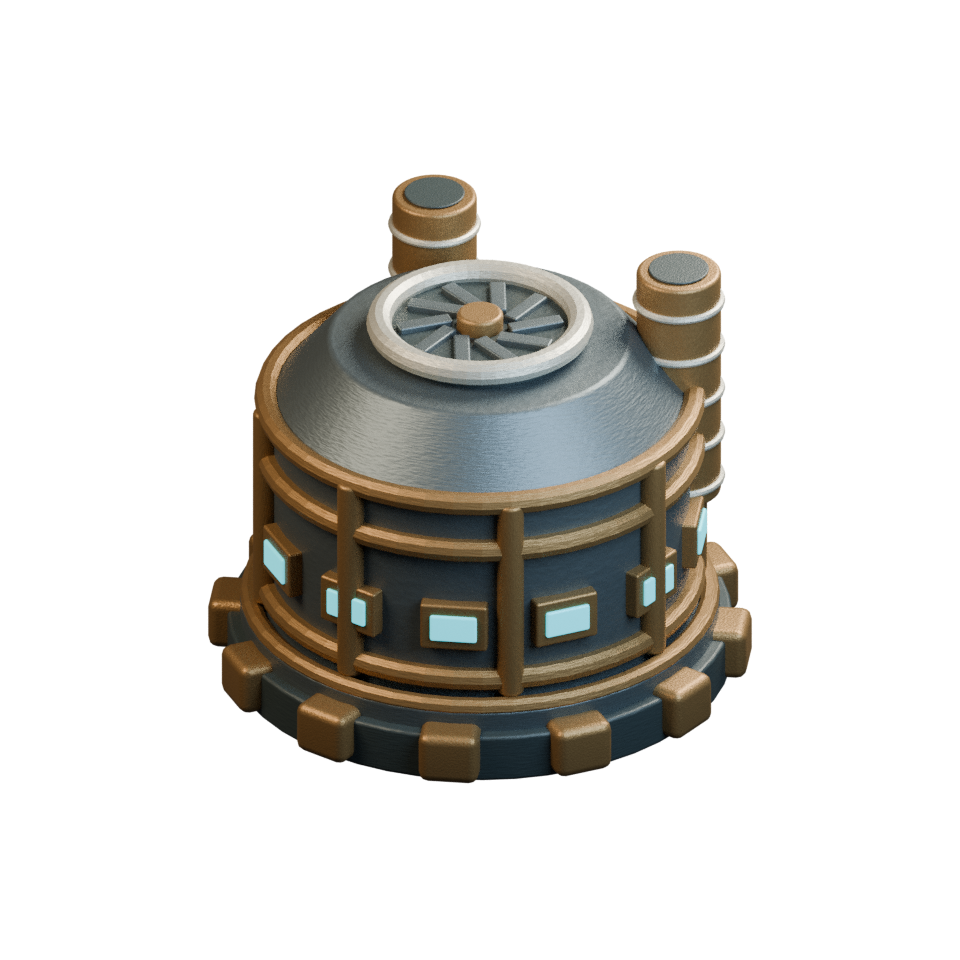

La centrale, reprise
La silhouette est conservée. Acier et renforts plus mats, patine irrégulière et vitrages moins éclatants ; les projecteurs éclairent les abords.
ESTRAN / ÉTUDE 01
Acier patiné, lampes de travail et manutention. Une portion de terrain en perspective isométrique, autour de la centrale existante.
Chargement de la scène…
La silhouette est conservée. Acier et renforts plus mats, patine irrégulière et vitrages moins éclatants ; les projecteurs éclairent les abords.
Le rotor tourne ; une traction transporte une caisse sur une piste dégagée. Le bâtiment reste ancré au sol. Le son du chariot suit sa vitesse et sa position.
Terrain et accessoires proposés pour Estran. Toute la scène est construite en 3D et rendue depuis une caméra fixe. Cet essai n’est pas encore relié aux stocks ni à la construction en partie.

Même bâtiment ; cadrage et éclairage différents. Comparaison de direction artistique, pas mesure des seules matières.